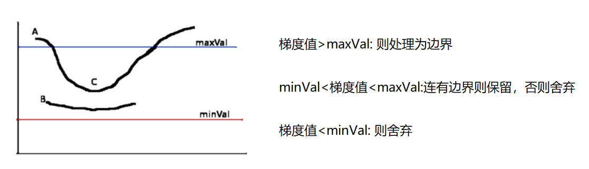

梯度描述灰度变化
梯度回答“哪里变化快”，轮廓把像素边界组织为点集，频域则从变化尺度解释平滑和细节。它们有联系，但输出对象不同：Sobel 给每个像素一个响应值，Canny 输出稀疏边缘图，findContours 输出轮廓坐标序列。
Sobel 的 $G_x$ 近似水平方向导数，能突出灰度沿左右方向变化的竖直边缘；$G_y$ 对应上下变化。梯度幅值常写成 $G=\sqrt{G_x^2+G_y^2}$，方向是 atan2(Gy, Gx)。也可以用 $0.5|G_x|+0.5|G_y|$ 合成展示，它便于观察，却不等于欧氏梯度幅值。
对于常用的 Sobel X 核，沿 x 正方向从黑到白产生正响应，反方向产生负响应。关键结论是先用有符号浮点保存导数，显示时再取绝对值；若一开始就让负值饱和为 0，会丢掉一类边缘。
import cv2 import numpy as np gx = cv2.Sobel(gray, cv2.CV_32F, 1, 0, ksize=3) gy = cv2.Sobel(gray, cv2.CV_32F, 0, 1, ksize=3) magnitude = cv2.magnitude(gx, gy) preview = cv2.convertScaleAbs(magnitude)
dx=1, dy=1 得到混合导数，不能代替分别求一阶导数后合成。Scharr 也是一阶导数近似，可以将它与 Sobel 对照；Laplacian 使用二阶导数，对噪声也敏感，不能简单理解为“更高级所以更准确”。
Canny 为什么需要多个步骤
Canny 的主要流程是平滑、计算梯度、非极大值抑制、双阈值和连接判断。平滑降低噪声响应；非极大值抑制沿梯度方向，只保留局部最大值，使粗响应变细；高阈值确定强边缘，低阈值排除弱到不足以保留的点，中间区域需要与强边缘连接。
因此 Canny(gray, 50, 100) 与 (120, 250) 的差别不仅是“线条多少”，还会改变边缘连通性。阈值过高，文档轮廓可能断开；过低，纹理产生大量候选轮廓。实际代码中可先显式 GaussianBlur 再调用 Canny，使预处理选择清楚可查。

金字塔与频域都在处理尺度
高斯金字塔先平滑再下采样，避免把高频变化直接折叠成错误的低频。上采样只能插值，不能恢复丢失的细节。拉普拉斯层保存当前层与下一层上采样结果之间的残差：$L_i=G_i-\operatorname{up}(G_{i+1})$。直接对 uint8 相减会回绕，教学计算应转为浮点；奇数尺寸图像还要明确指定上采样输出尺寸。
原资料的金字塔图 的二维 5×5 权重矩阵系数和为 256，图旁却写成 1/16。若要使常量图保持不变，二维核应除以 256；1/16 对应其一维向量的归一化。实现平滑核时，要做“常量输入是否保持常量”的基本检查。
从边缘图到轮廓测量
轮廓可以按外部、列表、双层或树形方式检索，边界点可以全部保留或进行直线压缩。需要纸张最外边界时可取外轮廓；若研究孔洞和嵌套关系，需要读取层级。返回轮廓不是自动按面积排序，直接取 contours[0] 只是演示。
下面按 OpenCV 4 的两个返回值写法整理，官方示例也采用这种接口。OpenCV 轮廓入门
contours, hierarchy = cv2.findContours( binary, cv2.RETR_EXTERNAL, cv2.CHAIN_APPROX_SIMPLE) if not contours: raise ValueError('没有检测到轮廓') contour = max(contours, key=cv2.contourArea) area = cv2.contourArea(contour) perimeter = cv2.arcLength(contour, True) polygon = cv2.approxPolyDP(contour, 0.02 * perimeter, True) x, y, w, h = cv2.boundingRect(contour) extent = area / (w * h)
面积是边界围成的几何面积，周长累加边界长度，矩形覆盖率衡量轮廓占轴对齐框的程度。epsilon 越大，多边形近似通常越粗，可能把真实角点合并。扫描文档寻找四点近似，只是提出纸张候选，仍需排除退化形状。
频谱代码的形状与数值
先将灰度图转成 float32，DFT 返回 (H,W,2)，最后一维分别是实部与虚部。频谱中心化应该只移动空间轴，避免同时交换实虚通道；对数可用 log1p 避免零幅值产生负无穷。
spectrum = cv2.dft(gray.astype(np.float32), flags=cv2.DFT_COMPLEX_OUTPUT) shifted = np.fft.fftshift(spectrum, axes=(0, 1)) display = np.log1p(cv2.magnitude(shifted[:, :, 0], shifted[:, :, 1])) # filtered 是乘以频域掩模之后的双通道频谱 restored = cv2.idft(np.fft.ifftshift(filtered, axes=(0, 1)), flags=cv2.DFT_SCALE | cv2.DFT_REAL_OUTPUT)
低通保留中心附近慢变化，图像趋于平滑；高通去掉低频后可突出细节，但不意味着恢复了原图没有的信息。硬切频谱可能产生振铃。原始 DFT 逆变换的缩放、负值与显示归一化要分开处理。
一个简单的检验顺序
用常量灰度图测试导数时，远离边界的响应应为零；用黑白竖直分界图测试时，x 导数应比 y 导数明显。这两个输入能区分核方向、符号、边界和显示转换的问题。轮廓测量则可以先用人工画出的矩形检查宽高和面积，再换真实照片，避免在复杂纹理中同时猜测多个环节。
练习
- 为什么混合导数不能替代梯度幅值？
- 5×5 金字塔核为什么必须核对权重总和？
- 若只想测最大的实体外框，轮廓代码应如何选择对象？
- 前者近似先对 x 再对 y 求导，后者合并两个一阶导数的强度；数学定义和边缘响应都不同。
- 平滑核和为 1 才能保留常量亮度，错误归一化会整体放大或缩小数值。
- 使用外轮廓检索，先检查非空，再按面积选择；不能假设列表第一项就是最大对象，必要时还要筛选面积、形状和位置。